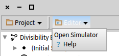
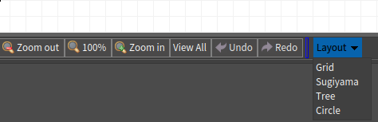

Possibly outdated
This page is possibly outdates and is pending review.
Extending menus
You can extend both Workspace and Editor menus.
Workbench menu
To add an item to the Editor item in the Workbench menu, create a method on the class-side of some class, preferably the class of your Plugin.
DCFsmPlugin class>>toolbarFor: aBuilder <dcEditorToolbarMenu: #DCFsmPlugin> (aBuilder item: 'Help') icon: Smalltalk ui icons help; action: [ HelpBrowser openOn: DCFsmHelp ]
You can name the method however you want, but you must include the <dcEditorToolbarMenu:> pragma.
The pragma takes as the argument the name of the plugin you wish the menu to be associated with; this way you can register the menu item from any class:
DCFsmSimulator class>>toolbarFor: aBuilder <dcEditorToolbarMenu: #DCFsmPlugin> (aBuilder item: 'Open Simulator') action: [ DCFsmSimulator new openOn: aBuilder model diagramController ]
The menu items will be automatically collected from all methods matching the pragma and the plugin name:

Too see all the available options you can specify for the menu item (submenu, icon, description, …) see the protocol of PragmaMenuAndShortcutRegistrationItem.
Finally aBuilder model keeps a reference to the appropriate DCEditor instance.
Editor menu
The Editor menu is placed underneath the canvas, and works on the same principle.
You just need to name the pragma <dcCanvasToolbar:>.
DCUmlClassPlugin>>canvasToolbarFor: aBuilder <dcCanvasToolbar: #DCUmlClassPlugin> (aBuilder item: 'Layout') action: [ ]. aBuilder model diagramController addLayoutMenu: aBuilder parent: 'Layout' DCUmlClassDiagramController>>addLayoutMenu: builder parent: aParent | classes inheritance associations centerY | ... (builder item: 'Sugiyama') parent: aParent; action: [ RTSugiyamaLayout new doNotAttachPoint; verticalGap: 100; horizontalGap: 100; on: classes edges: inheritance. self view signalUpdate ].
Here aBuilder model holds a reference to the appropriate DCCanvasModel instance.
